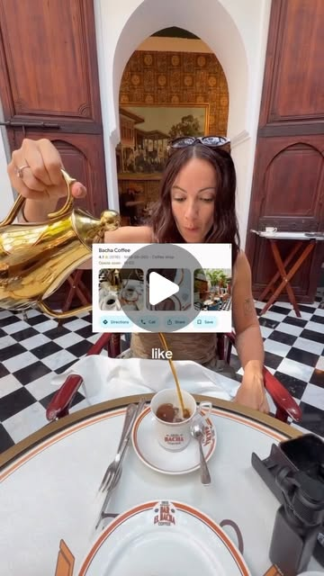

Instagram Reel

fit_nomads_ on July 19, 2026: "YOUR MARRAKECH GUIDE
video transcript (enriched by ClaudeClaw)
Summary
[CAPTION]
fit_nomads_ on July 19, 2026: "YOUR MARRAKECH GUIDE
Where to stay, what to do and where to eat 😍
We only stayed 4 nights here but honestly loved it. It was not what we expected at all.
[CAPTION]
fit_nomads_ on July 19, 2026: "YOUR MARRAKECH GUIDE
Where to stay, what to do and where to eat 😍
We only stayed 4 nights here but honestly loved it! It was not what we expected at all!
Save this a Send it to your mates as always!!
Have you been? Or are you planning to go? Let us know in the comments below
#Marrakech #marrakechguide #marrakechtips #morocco".
[VIDEO]
If you're planning a trip to Marrakesh, then this is the only guide that you need. We just spent five days there, and honestly, this city really took us by surprise. I'm gonna tell you where to stay, the experiences that you can do here, and of course, where to eat. So make sure you save this post, send it to your mates, and let's get into it. Honestly, we loved Marrakesh so much and were surprised at how non-hectic it was. We went to Egypt last year and were constantly hassled the whole time we were there. We thought Marrakesh would be like this, but it was nothing like it at all. It is definitely a little hectic, and you do need to keep your wits about you, especially at night. But honestly, we felt so safe and had a great trip. So, firstly, where to stay, we would actually recommend staying in the Medina or just outside of. It is where all the action is, and you'll be super close to everything so you can easily walk, which we loved. We stayed in a super cute Riyadh, which was really central. I'll pop the name on the screen here. The guy running it was so lovely, and the breakfast, the traditional breakfast every day was 10 out of 10. While you're there, definitely do a food tour. We jumped on Airbnb and searched a bunch and we found one that we really loved. It was four hours, and the best part about it was not only could you try all of the traditional food and meals, but it was also a walking tour so we could walk through the town and get to explore everything whilst also eating amazing food. This is the tour we did, and we definitely recommend it. Secondly, you are going to want to explore the coffee scene here because it's really good. We loved Dahab coffee. The coffee was strong and it was super reasonably priced. But another experience is going to Bakar Coffee. Now we tried to go here on one of the days. We arrived at like 1 p.m. We were knocked back because there was an hour and a half wait. We didn't want to do that. It's honestly such a beautiful coffee shop. It's in the middle of a palace. The next day we woke up, we went at 9 40 a.m. and we waited in line for 20 minutes until it opened at 10am, and honestly, we were so happy we did that. They have over 500 different varieties of coffee, ranging from like $5 to $150. We had coffee, we had cake, but it was just a really beautiful experience. The palace is absolutely stunning, and you can have breakfast there too. Just note you do have to pay to go in to the palace, and then of course, for everything you buy at the coffee shop. And then lastly, book a sunset dinner reservation at Dada Rooftop. We loved this restaurant. The food was pretty good, but honestly, it was just the vibe. They brought out the saxophone when the sun was setting. The staff were just so lovely, and the drinks were amazing as well. So definitely book that one through WhatsApp. Some other things to note for your trip, cash is still king. Whilst a lot of places do take card, always carry cash with you. The ATMs are totally safe to get it out there too. And they don't have Uber, but they have plenty of local taxi drivers to get you around everywhere. Any questions, drop them below and have the best trip.
View original on Instagram Reel →